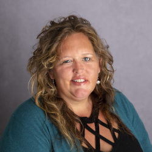

01
Impôt des particuliers
Déclarations T1, travail autonome, revenus locatifs et placements. Abordez la période des impôts avec plus de clarté.
Parlons de vos besoinsLA COMPTABILITÉ À DIMENSION HUMAINE
Votre entreprise. Votre famille. Vos projets. Nous vous aidons à y voir clair dans vos finances pour vous concentrer sur ce qui compte pour vous.
 UN PEU PLUS D’ESPACE POUR SOUFFLER
UN PEU PLUS D’ESPACE POUR SOUFFLERLa vie en
équilibre.
UN PEU DE CLARTÉ CHANGE TOUT
De votre déclaration de revenus à la prochaine étape de votre entreprise, trouvez des services comptables adaptés à votre réalité.
Déclarations T1, travail autonome, revenus locatifs et placements. Abordez la période des impôts avec plus de clarté.
Parlons de vos besoinsDéclarations T2 et planification fiscale pour les petites et moyennes entreprises, en tenant compte de vos projets.
Parlons de vos besoinsTenue de livres mensuelle, trimestrielle ou annuelle et remises gouvernementales pour mieux comprendre vos finances.
Parlons de vos besoinsÉtats financiers, rapports de trésorerie et missions de compilation pour faire le point sur votre entreprise.
Parlons de vos besoinsSalaires, retenues, feuillets T4 et relevés d’emploi. Un soutien concret pour prendre soin de votre équipe.
Parlons de vos besoinsMise en place de systèmes comptables, accompagnement QuickBooks Online, formation et conseils pour votre croissance.
Parlons de vos besoins
UNE ÉQUIPE HUMAINE À VOS CÔTÉS
Fondée en 2020 par Jenny McCrea, CPA, CGA, CMD Accounting Services est un cabinet de Vernon qui privilégie une approche personnelle. Nous accompagnons les particuliers et les entreprises de l’Okanagan et de partout au Canada.
Nous prenons le temps de comprendre votre situation, d’expliquer les choses simplement et d’adapter nos services à vos besoins. Des échanges chaleureux. Des solutions pratiques. Une équipe attentive aux détails.
SIMPLIFIONS LES CHOSES
Expliquez-nous votre situation, vos préoccupations et le soutien dont vous avez besoin.
Nous discuterons des services et des documents adaptés à votre situation.
Une fois la marche à suivre établie, nous vous aidons à rester informé et à avancer avec clarté.
Oui. CMD propose des services fiscaux aux particuliers ainsi que des services de comptabilité, de fiscalité, de tenue de livres et de paie aux entreprises.
CMD est établi à Vernon et accompagne des clients de l’Okanagan et de partout au Canada. Communiquez avec l’équipe pour discuter des possibilités.
Appelez le 250 558 2989 ou écrivez à Jenny.McCrea@cmdasrv.com pour discuter de vos besoins et fixer un rendez-vous. Demandez à l’équipe comment transmettre vos documents financiers de façon sécurisée.
LA SUITE COMMENCE ICI
Une question ou un besoin de clarté sur vos finances? Nous serons heureux d’en discuter avec vous.
Appelez le 250 558 2989Lundi–jeudi · 9 h–17 h
Vendredi · 9 h–16 h